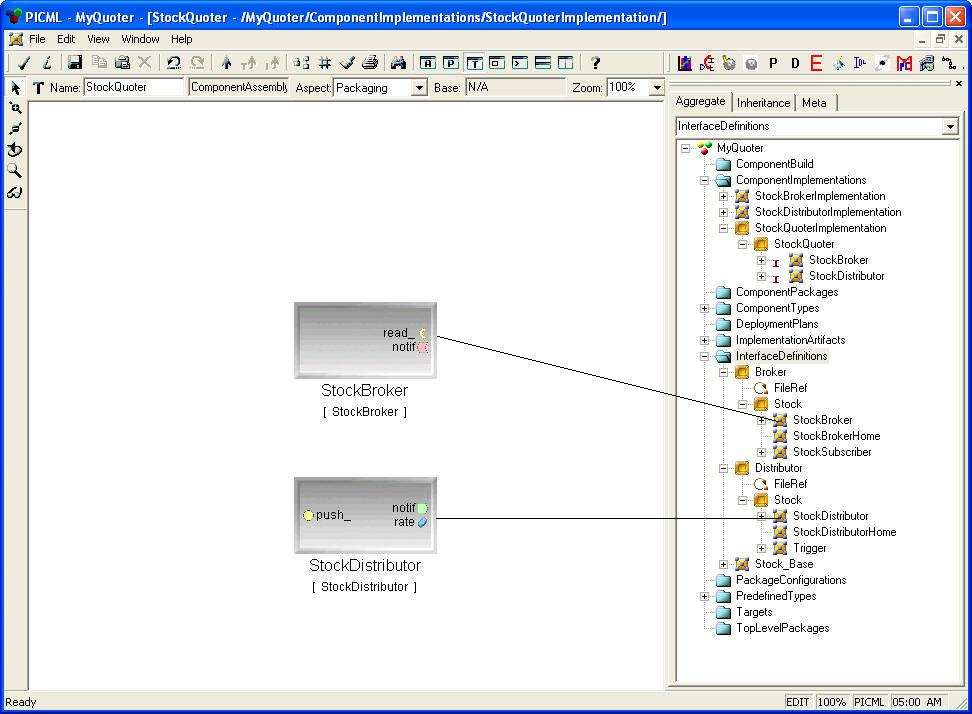
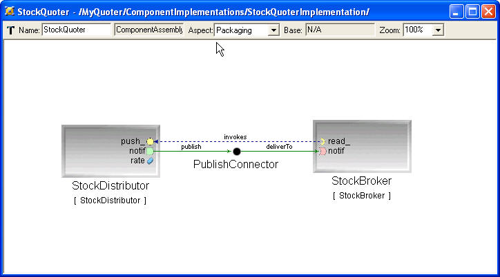
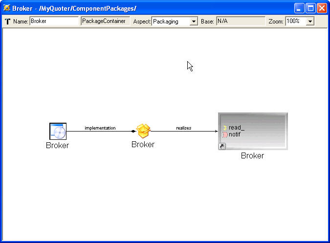
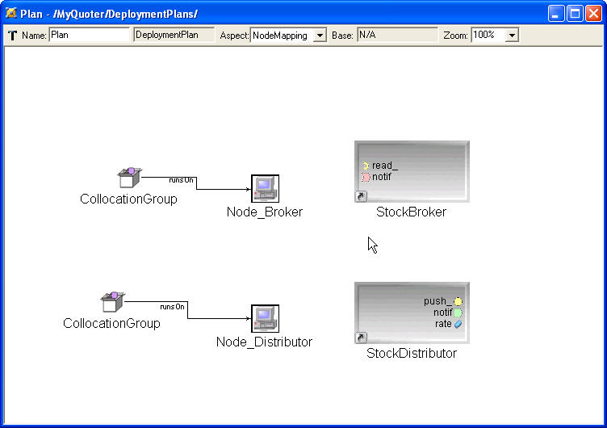

The other monolithic component, StockDistributor should be
modeled exactly the same way StockBroker was modeled.
Assembly component is a recursive concept. It provides a boundary for
the composition of monolithic components and/or
other assembly components, i.e., it is a virtual component. So,
modeling an assembly component is different from modeling a
monolithic component. You don't need to worry about the artifacts or
interfaces. All you need to do is to assemble the existing components.
Next, we'll show how to assemble the StockQuoter.
- Create a <<ArtifactContainer>>, name it
"StockQuoter", and open it;
- From the PartBrowser, add a <<ComponentAssembly>>,
name it "StockQuoter" and open it;
- Now we will create two instances for StockBroker and
StockDistributor. To do that, expand the tree in the Browser by
clicking "+", in
Quoter/InterfaceDefinitions/Stock/. Keep
the "StockQuoter" <<ComponentAssembly>> window opened while
doing this.
Then drag Quoter/InterfaceDefinitions/Broker/Stock/StockBroker
in the
browser to the "StockQuoter" while pressing ALT key. This operation
will create an instance of StockBroker for you. Repeat the
same steps for Quoter/InterfaceDefinitions/Distributor/Stock/StockDistributor.
- Create an <<PublishConnector>>.
- Now assemble the components together according to Figure 1, using the connect mode (
 )and
the resulting assembly model should look like Figure 6. Note that to
create connections between
StockDistributor.notify_out and StockBroker.notify_in, you will need
the intermediate connector <<PublishConnector>>.
)and
the resulting assembly model should look like Figure 6. Note that to
create connections between
StockDistributor.notify_out and StockBroker.notify_in, you will need
the intermediate connector <<PublishConnector>>.

Figure 6
ComponentPackage (.cpd)
This folder contains deployable component packages models. The
component package contains the necessary
implementation artifacts for a particular application. Here are the
steps to model the Component Package for
StockBroker.
- Insert a "ComponentPackage" folder in the Quoter root folder,
and create a <<PackageContainer>>, name it "Broker";
- From the PartBrowser, add the following:
- a <<ComponentPackage>> named "Broker";
- a <<ComponentImplementationReference>> named
"Broker";
- a <<ComponentRef>> named "Broker";
- Refer the <<ComponentImplementationReference>> Broker
to
Quoter/ComponentImplementations/Broker. Refer the
<<ComponentRef>> Broker to Quoter/InterfaceDefinitions/Broker/Stock/StockBroker
- Switch to Connect Mode and create two connections according to
the following relationship.
- <<ComponentImplementationReference>> Broker
implements <<ComponentPackage>> Broker;
- <<ComponentPackage>> Broker realizes
<<ComponentRef>> Broker.
The model you created should resemble Figure
7.

Figure 7
Now create a ComponentPackage/StockDistributor following the same steps.
We will also need to create a package for the assembly component
StockQuoter. Different from the Broker and Distributor packages, the
Stock Quoter does not need a >>ComponentRef>>
since this assembly does not have interfaces. To make this model:
Insert a <<ComponentPackage>>, name it
StockQuoter;
Insert a <<ComponentImplementationReference>>;
- Refer the <<ComponentImplementationReference>>
to
Quoter/ComponentImplementations/StockQuoter/StockQuoter;
- Name it StockQuoter.

Figure 8
PackageConfiguration (.pcd)
This folder contains just one model capturing specific configuration of
Component packages.
- Insert a new folder "PackageConfiguration", and create a
<<PackageConfigurationContainer>>, name it "Default", click
to
open it.
- Add a <<PackageConfiguration>> named "default" and a
<<ComponentPackageReference>>, name it "StockQuoter",
connect "default" to "StockQuoter"
- Refer "StockQuoter" (<<ComponentPackageReference>>)
to
Quoter/ComponentPackage/StockQuoter
ToplevelPackage (.pcd)
This folder contains one model capturing information about the
top-level element that will be fed to
the application.
- Insert a new folder "ToplevelPackage", and create a
<<ToplevelPackageContainer>>, it name it "Default", double
click to open it.
- Add a <<ToplevelPackage>> named "ToplevelPackage"
and a <<PackageConfigurationReference>>, name it "Default",
connect "ToplevelPackage" to "default"
- Refer "Default" to
Quoter/PackageConfiguration/Default
Targets (.cdd)
This folder contains domain-specific models capturing information about
the target
environment in which component-based application will be deployed. In
this Quoter example, we can either deploy the two components into ONE
host, or into TWO different host. We will deploy the Quoter into two
different host.
- Insert a new folder "Targets", in this folder, inside a model
"Domain"; double click to open it.
- From the PartBrowser, add two <<Node>> named
"Broker" and "Distributor" respectively.
Now we are ready to deploy our Components to the actual physical
environment.
DeploymentPlan (.cdd)
This folder contains a plan model that captures information about the
assignment of component to nodes.
- Insert a new folder "DeploymentPlan", and insert a model
<<DeploymentPlan>>; name it "Plan", click to open it
- From the PartBrowser, add the following:
- Two <<CollocationGroup>>
- Two <<NodeReference>> named "Broker" and
"Distributor" respectively, refering to
Quoter/Targets/Domain/Broker
and Quoter/Targets/Domain/Distributor respectively
- Two <<ComponentRef>> named "StockBroker" and
"StockDistributor" respectively, refering to
Quoter/ComponentImplementations/StockQuoter/StockQuoter/StockBroker
and
Quoter/ComponentImplementations/StockQuoter/StockQuoter/StockDistributor
respectively. Note that the <<ComponentRef>> in
DeploymentPlan is not refering to the interface, but rather, the actual
instance of the implementation.
- Switch to Connect Mode, connect one
<<CollocationGroup>> to <<NodeReference>> Broker,
connect another
<<CollocationGroup>> to <<NodeReference>> Distributor.
Now the model looks like the following.

Figure 9.
- Now we need to associate <<ComponentRef>>
StockBroker to the
<<CollocationGroup>> running on the
<<NodeReference>> Broker, and <<ComponentRef>>
StockDistributor to the <<CollocationGroup>> running on the
<<NodeReference>> Distributor. To do that, switch the Edit
Mode Bar to Set Mode (
 ), and move
the cursor to the <<CollocationGroup>> running on
<<NodeReference>> Distributor, right-click on it. You will
find the cursor is changed to set mode, and only the
<<CollocationGroup>> you clicked in is highlighted, as
shown
in Figure 10.
), and move
the cursor to the <<CollocationGroup>> running on
<<NodeReference>> Distributor, right-click on it. You will
find the cursor is changed to set mode, and only the
<<CollocationGroup>> you clicked in is highlighted, as
shown
in Figure 10.

Figure 10.
Now move your cursor to
<<ComponentRef>> StockDistributor, and left-click it,
so that it looks like Figure 11.
Figure 11
This operation
associates
StockDistributor component to the
<<CollocationGroup>> running on
Distributor node.
To do the same with
Broker, just right-click on another <<CollocationGroup>>,
and left-click on StockBroker <<CollocationGroup>> which is
highlighted.
ComponentBuild
We have finished all the models needed to
generate the descriptor files for StockQuote. This ComponentBuild
folder is designed specifically to ease the effort of having to
hand-code the MPC files project. I won't go into details
explaining this model. Please see the example for reference.
After we are done with the modeling, the flattened_deploymentplan
interpreter that comes along with PICML will help us to generate a
flattened_deploymentplan.cdp file. Please make sure you generate this
file to MyQuoter/descriptors.
Ming Xiong
Last modified:


{kind=link}